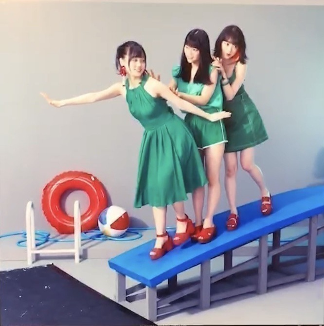
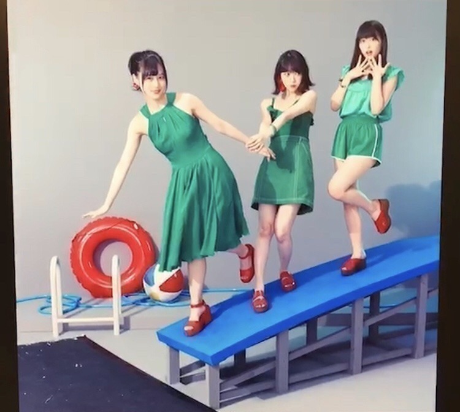
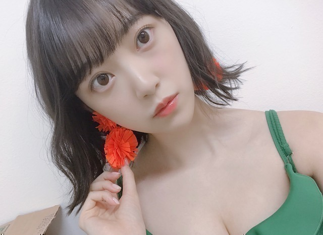
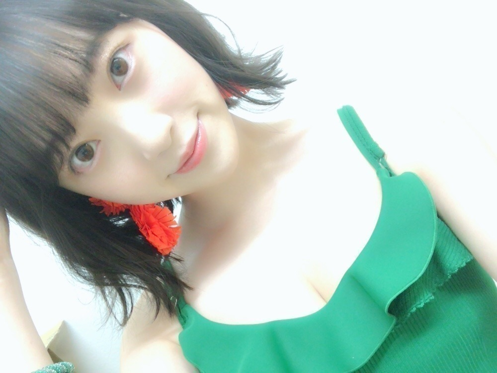
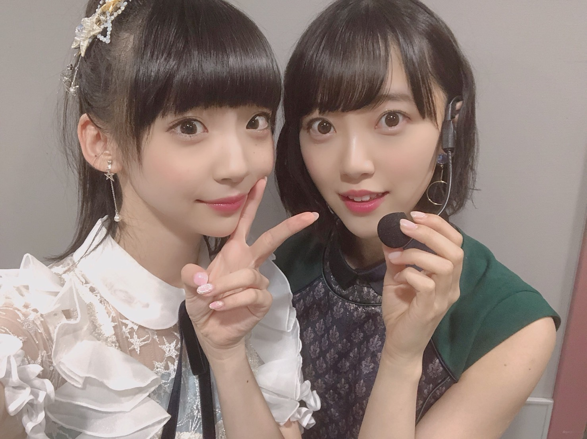

2018/0715Sun#ジコチュー
8/8 発売
ジコチューでいこう！
のジャケ写が公開されました。
オフショット〜


わたしは一応、全ポジション経験しました。笑
撮影中も美月とれんかと
わちゃわちゃ楽しかった〜♪
タイプCよろしくお願いします！


オレンジ色が夏を感じさせますね！
イヤリングおっきくてかわいい〜o(･x･)/
緑着るのも珍しいかも。

昨日大好きなゆかっちに会えて
お喋りしたり楽しかったな〜
会ってすぐ「うなばら〜♪」って
私の歌割り真似しながら指差してきた。笑
そんなゆかっちがね、
ジュース買ってくれたの♡
太っ腹！
ありがとう！
わたしは豆のお菓子ポリッピーではないからね！笑
ツアーもうすぐかぁ
楽しみです
では。
2018/07/15 15:06
コメント(434)
音楽の日のジコチューで行こうのときのウインク最高に可愛かった笑 あと、ブログに載せてる写真セクシーだね笑 体調に気を付けて頑張って(●'д')bﾌｧｲﾄ
ジャケ写めっちゃ好き！
未央奈ブログ更新ありがとう！
ジャケ写超かわいい！未央奈、美月、れんたんの組み合わせは最高！！！
全ツは大阪両日とも参戦するから楽しみにしてます！
ジャケ写超かわいい！未央奈、美月、れんたんの組み合わせは最高！！！
全ツは大阪両日とも参戦するから楽しみにしてます！
このブログにニヤニヤせずにはいられない
理由はゆかっちにでも聞いてみて
おやすみおな
良い夢を
また明日
理由はゆかっちにでも聞いてみて
おやすみおな
良い夢を
また明日
堀ちゃん、こんばんわ＼(ーωー)／
21thのジャケ写見、夏らしくてすごくオシャレだねー！！
ジャケ写見ただけで全タイプ欲しくなったよ
緑の衣装にオレンジのイヤリング、ばっちり似合ってるね
堀ちゃんはトウモロコシのお菓子ポリンキーじゃなかったっけ？？
21thのジャケ写見、夏らしくてすごくオシャレだねー！！
ジャケ写見ただけで全タイプ欲しくなったよ
緑の衣装にオレンジのイヤリング、ばっちり似合ってるね
堀ちゃんはトウモロコシのお菓子ポリンキーじゃなかったっけ？？
可愛すぎて
未央奈へ
推し3人の写真で嬉しいなぁ…
また番組とかで撮影裏話聴かせてね
推し3人の写真で嬉しいなぁ…
また番組とかで撮影裏話聴かせてね
新曲とてもいい曲ですね
きにいりました、
きにいりました、
ブログありがとう！
緑の堀ちゃん新鮮だな〜
でも緑も夏らしさを感じるカラーだよねー
明日は個握だね！堀ちゃんのところへは行けないないけど、連日危険なレベルの猛暑が続いているから、水分補給をこまめにとって、無理はしないようにね
ではおやすみ
緑の堀ちゃん新鮮だな〜
でも緑も夏らしさを感じるカラーだよねー
明日は個握だね！堀ちゃんのところへは行けないないけど、連日危険なレベルの猛暑が続いているから、水分補給をこまめにとって、無理はしないようにね
ではおやすみ
ジャケット今回も可愛いですね。
新曲楽しみ！
新曲楽しみ！
今日ゆかっちに会ってきたよ
堀ちゃんのチケホル見せたら「ポリッピー 」って叫ばれた(笑)本当に仲良しやね〜ほのぼのする
」って叫ばれた(笑)本当に仲良しやね〜ほのぼのする
堀ちゃんのチケホル見せたら「ポリッピー
こんばんは。
可愛いですね！
TypeC予約しましたよ。
緑も良いけど、やはりオレンジが映えますね。
似合ってます、夏色真っ只中、ハマり過ぎです。
音楽の日、観ましたよ。
特に新曲の堀さん、輝いてました！
衣装も可愛いですね。
そして、またまたのウインク、参りました！
ありがとうございます。
永久保存です。
やっと近所の蝉も鳴き始めました。
蝉に負けずに、夏を楽しみましょう。
頑張って行きましょう！
可愛いですね！
TypeC予約しましたよ。
緑も良いけど、やはりオレンジが映えますね。
似合ってます、夏色真っ只中、ハマり過ぎです。
音楽の日、観ましたよ。
特に新曲の堀さん、輝いてました！
衣装も可愛いですね。
そして、またまたのウインク、参りました！
ありがとうございます。
永久保存です。
やっと近所の蝉も鳴き始めました。
蝉に負けずに、夏を楽しみましょう。
頑張って行きましょう！
堀ちゃん可愛すぎ！

みおちゃんこんばんは！今日もお疲れ様です
音楽の日見た！みおちゃんのウィンク可愛すぎて射抜かれました
ジャケ写かわいー！足綺麗で羨ましい(今更)
毎日暑いので熱中症には気をつけて〜
あいほ
音楽の日見た！みおちゃんのウィンク可愛すぎて射抜かれました
ジャケ写かわいー！足綺麗で羨ましい(今更)
毎日暑いので熱中症には気をつけて〜
あいほ
CD絶対買うに決まっとるやーん！！
ゆかっちのあげた動画みたけど、どんな会話してたのかめっちゃ気になった笑
最近暑いからツアーに向けて倒れないよーに頑張ってね！
ゆかっちのあげた動画みたけど、どんな会話してたのかめっちゃ気になった笑
最近暑いからツアーに向けて倒れないよーに頑張ってね！
かわいいー！
未央奈ブログ更新ありがとう！
ブログ更新ありがと！！
どんな衣装でも似合う未央奈が好きすぎる！！
どんな衣装でも似合う未央奈が好きすぎる！！
typeCぜったい買う！
緑似合ってる
かわいい〜
緑似合ってる
かわいい〜
緑の衣装チョー似合ってます！
タイプC買います！
そして来月握手会行きます！
よろしくです、ホリッピー！
タイプC買います！
そして来月握手会行きます！
よろしくです、ホリッピー！
ブログ更新ありがとう！みおちゃん、かわいい！ジコチューで行こう！すげー良かった！！応援してます！
みおなー！
ブログ更新ありがとう
ジャケ写めっちゃいいね！！
Cタイプ買うしかない＼＼\\٩( 'ω' )و //／／
10/13の全握当たったよ
また会える嬉しみが深い
その前に全ツ宮城二日間とも参加するのでよろしくね！！
今日一日テニスしてたら真っ黒になりました笑笑
日焼け止め塗り忘れた！
暑さに負けずにいこう
次のブログも楽しみにしてます！
大好き！
ばいばーい
ブログ更新ありがとう
ジャケ写めっちゃいいね！！
Cタイプ買うしかない＼＼\\٩( 'ω' )و //／／
10/13の全握当たったよ
また会える嬉しみが深い
その前に全ツ宮城二日間とも参加するのでよろしくね！！
今日一日テニスしてたら真っ黒になりました笑笑
日焼け止め塗り忘れた！
暑さに負けずにいこう
次のブログも楽しみにしてます！
大好き！
ばいばーい
未央奈ちゃんブログ更新お疲れ様！♡
今回買う予定なかったのに可愛すぎるからCだけ買うね？？？でも握手はちゃんと行くし！！！安心して？♡
3期のおふたりさんと楽しそうね？お姉さんぽいよ？！
そう！音楽の日！ジコチュー初披露だったけどやばくなかった？？急にセンターになったから震えたよマジで！！！！！
盛り上がりそうな曲だね好きだった♡
PVも早くみたいな？
そう！！！インフル！！！未央奈ちゃんの髪型が逃げ水期間のときみたいに緩くウェーブかかってて無理だったすき！！！
全ツもうすぐだね早く会いたいなあ。
今回買う予定なかったのに可愛すぎるからCだけ買うね？？？でも握手はちゃんと行くし！！！安心して？♡
3期のおふたりさんと楽しそうね？お姉さんぽいよ？！
そう！音楽の日！ジコチュー初披露だったけどやばくなかった？？急にセンターになったから震えたよマジで！！！！！
盛り上がりそうな曲だね好きだった♡
PVも早くみたいな？
そう！！！インフル！！！未央奈ちゃんの髪型が逃げ水期間のときみたいに緩くウェーブかかってて無理だったすき！！！
全ツもうすぐだね早く会いたいなあ。
釣られた。
オフショット、
こんな風に撮ってたんですねぇ(*´∇｀*)
合成前のジャケット撮影とか
面白いですよね！
……ワオ！
何がって、ワオ！(笑)
まだまだ暑くて
忙しい日が続くと思いますが、
体調に気をつけて
お互い頑張りましょうね♪
こんな風に撮ってたんですねぇ(*´∇｀*)
合成前のジャケット撮影とか
面白いですよね！
……ワオ！
何がって、ワオ！(笑)
まだまだ暑くて
忙しい日が続くと思いますが、
体調に気をつけて
お互い頑張りましょうね♪
かわいい
ジコチューかわいすぎた！
これからもがんばぁ！
ジコチューかわいすぎた！
これからもがんばぁ！
写真全部可愛い〜！！！8月8日発売が楽しみ！！今回CD買っちゃおっかな
寝てた！(笑)
ということで、この時間だけどおはようございます。
昨日、夜通しで大学のレポート書いてたから３０分くらいしか寝てなくてですね、先ほど、気づいたら寝ていたわけですよ(笑)
とりあえず、レポートは１つ終わらせた！あと２つ！
今日もオールになりそうな予感！？！？
明日は握手会だからね、寝坊はできないし、オール説有力かもね～
ジャケ写見たよ。どうしてそうなった？？？ってツッコミ入れたくなる(笑)
正直言っちゃうと、２期生曲なくてちょっと寂しい。
ジコチューでいこう！は盛り上がれそうな曲だから好き～
クレームブリュレ会的視点から見ると、プリン会の絢音ちゃんが初選抜だから、メモリアルなシングルになりますなぁ～
これからの活躍に期待大だね！
次はみり愛も選抜入りして、プリン会全員選抜目指したいね！
ゆくゆくは２期生全員で選抜に！
それが夢であり、目標でもある。
２期生の活躍に期待してるよ！
実はですね～ちょっと思ったんですよ。ポリッピーってお菓子見て、未央奈じゃん(笑)って。
初めて見たときは本当にホリッピーに見えちゃって、えぇ！？！？ってなったポリッピー。
今となっても、やっぱりホリッピーにしか見えないポリッピー。
でも食べたことはない(笑)
ニックネーム化するかもね(笑)
ということで、明日の握手会で会いましょう！
先に言っておくと、明日の握手会終わったら３ヶ月くらい未央奈に会えません。
寂しいですな。。。
明日は楽しもう！
では✋
てんちょ
ということで、この時間だけどおはようございます。
昨日、夜通しで大学のレポート書いてたから３０分くらいしか寝てなくてですね、先ほど、気づいたら寝ていたわけですよ(笑)
とりあえず、レポートは１つ終わらせた！あと２つ！
今日もオールになりそうな予感！？！？
明日は握手会だからね、寝坊はできないし、オール説有力かもね～
ジャケ写見たよ。どうしてそうなった？？？ってツッコミ入れたくなる(笑)
正直言っちゃうと、２期生曲なくてちょっと寂しい。
ジコチューでいこう！は盛り上がれそうな曲だから好き～
クレームブリュレ会的視点から見ると、プリン会の絢音ちゃんが初選抜だから、メモリアルなシングルになりますなぁ～
これからの活躍に期待大だね！
次はみり愛も選抜入りして、プリン会全員選抜目指したいね！
ゆくゆくは２期生全員で選抜に！
それが夢であり、目標でもある。
２期生の活躍に期待してるよ！
実はですね～ちょっと思ったんですよ。ポリッピーってお菓子見て、未央奈じゃん(笑)って。
初めて見たときは本当にホリッピーに見えちゃって、えぇ！？！？ってなったポリッピー。
今となっても、やっぱりホリッピーにしか見えないポリッピー。
でも食べたことはない(笑)
ニックネーム化するかもね(笑)
ということで、明日の握手会で会いましょう！
先に言っておくと、明日の握手会終わったら３ヶ月くらい未央奈に会えません。
寂しいですな。。。
明日は楽しもう！
では✋
てんちょ
写真可愛いよ。
ジコチューでいこう絶対買うよ！！！
暑い日が連日続いてるから熱中症にならないようにね。
残りの全国ツアーも頑張ってねー！！！
大好き未央奈
ジコチューでいこう絶対買うよ！！！
暑い日が連日続いてるから熱中症にならないようにね。
残りの全国ツアーも頑張ってねー！！！
大好き未央奈
昨日テレビ見ました
突然のセンターポジ❗
ひょっとしてこの前の「逃げ水」でのウインクは
新曲でのフラグ❓笑
未央奈可愛かったよ
明日は個握未央奈頑張って
突然のセンターポジ❗
ひょっとしてこの前の「逃げ水」でのウインクは
新曲でのフラグ❓笑
未央奈可愛かったよ
明日は個握未央奈頑張って
きゅーーーーーーーーーーーーーーーーーーーーーーーーーーーーーーーーーーーーーーーーーーーーーーーーーーーーーーーーーーーーーーーーーーーーーーーーーーーーーーーーーーーーーーーーーーーーーーーとぉぉぉぉぉぉぉ！！！！！！！！！！！！！！！！！！！！！！！！！

みんな爽やかでかわいいよね！
未央奈ちゃんもめっちゃ似合ってるしかわいい！！
飾りたくなるポスターだよね(о´∀`о)
未央奈ちゃんもめっちゃ似合ってるしかわいい！！
飾りたくなるポスターだよね(о´∀`о)
堀ちゃんブログ更新ありがとう^ ^
タイプCのジャケ写見たよ。夏って感じで可愛かった
先日音楽番組で新曲聴いたけども爽やかで良い曲だね
未央奈のウィンクも可愛かった( ´ ▽ ` )
夏バテに気をつけてねー。
タイプCのジャケ写見たよ。夏って感じで可愛かった
先日音楽番組で新曲聴いたけども爽やかで良い曲だね
未央奈のウィンクも可愛かった( ´ ▽ ` )
夏バテに気をつけてねー。
あきちゃんです。こんばわみおなちゃん。８月発売のシングルジコチューで行こう！僕わAタイプからDタイプ４枚ずつ買います。ジャケット写真みおなちゃんのセクシーだね。僕も緑色の服持ってるよ。後イヤリングもオレンジ色で可愛いね。僕も欲しいな。10月の握手会の時にどこで買ったか教えてくださいね。あと乃木坂46の中で１番みおなちゃんが大好きだよーん。だってみおなちゃんの生写真50枚持ってるもん。そしてもうすぐ僕の家の近くわ花火大会だから嬉しいです。みおなちゃんの写真集もいっぱい持てるし。サイン付もあるよ。乃木坂46の曲の中で１番バレッタとサヨナラの意味といつかできるから今日できるが１番好きだな。明日の握手会熱いけど僕わいけないけど頑張ってくださいね。10月わいっぱい行くから待っててね。乃木坂46の2期生の中で１番みおなちゃんが大好きだよーん。❤❤❤❤❤❤❤❤❤❤❤❤❤❤❤❤❤❤❤❤❤❤❤❤❤❤❤❤❤❤❤❤❤❤❤❤❤❤❤❤❤❤❤❤❤❤❤
相変わらず最高でした。
未央奈ちゃん、今日も一日お疲れさまです。
音楽の日、みましたよ！
ど真ん中でウインク、そして去っていく後ろ姿・・・、
なんか大人になったんだなぁ～って感じてみていました！（笑）
昨年の東京ドームでの「はじめは孤独と不安で・・・」の涙、
改めて感動しています！
センターに対する怖さ、ライブに対する不安、
いろいろ負のイメージから
スタートしてここまで来た未央奈ちゃんのことを尊敬しています！！
だからこそ、これからどのように成長していくのか、
ワクワク感がたまらないのです！！
私たちを楽しませてください、これからもずっと！！！
応援しています、頑張ってください！！！
音楽の日、みましたよ！
ど真ん中でウインク、そして去っていく後ろ姿・・・、
なんか大人になったんだなぁ～って感じてみていました！（笑）
昨年の東京ドームでの「はじめは孤独と不安で・・・」の涙、
改めて感動しています！
センターに対する怖さ、ライブに対する不安、
いろいろ負のイメージから
スタートしてここまで来た未央奈ちゃんのことを尊敬しています！！
だからこそ、これからどのように成長していくのか、
ワクワク感がたまらないのです！！
私たちを楽しませてください、これからもずっと！！！
応援しています、頑張ってください！！！
ブログ更新ありがとう！☺︎
音楽の日見たんだけど、センターでウインクしてるところめちゃくちゃ可愛かった〜♪
みおなが緑のお洋服着てるのあんまり見たことないから新鮮だし可愛い♡
ポリッピーが豆のお菓子なの知らなかった！笑
ツアー行けないけど応援してるよ！
音楽の日見たんだけど、センターでウインクしてるところめちゃくちゃ可愛かった〜♪
みおなが緑のお洋服着てるのあんまり見たことないから新鮮だし可愛い♡
ポリッピーが豆のお菓子なの知らなかった！笑
ツアー行けないけど応援してるよ！
絶対に買います!!!
お疲れ暑さに負けず頑張ってね。みおちゃん好き好き
未央奈可愛い！！
ブログありがとー！
ブログありがとー！
未央奈かわいすぎ！
新曲のcd届くの楽しみにしてる！
新曲のcd届くの楽しみにしてる！
ジコチューでいこうぉぉぉぉーーー
しかし毎日あっちちぃぃー！もうやめてぇー！
ジコチューで行こう！めっちゃ好き！
音楽の日の時の衣装めっちゃ可愛かった！！
音楽の日の時の衣装めっちゃ可愛かった！！
堀ちゃん、ブログ更新ありがとう〜
堀ちゃん、緑も似合うね〜
超絶かわいい！
明日握手会行くからね〜
超楽しみだー
ツアーは、大阪と仙台行くからね〜
タオルいっぱい振るから見つけね〜
堀ちゃん、緑も似合うね〜
超絶かわいい！
明日握手会行くからね〜
超楽しみだー
ツアーは、大阪と仙台行くからね〜
タオルいっぱい振るから見つけね〜
音楽の日の未央奈いつも以上に仕上がってて惚れた( ᵒ̴̶̷̥́ ^ ᵒ̴̶̷̣̥̀ )♡
こんばんは
ジャケ写みたよ～全パターン撮影していたんだね、どれも堀ちゃんの表情が魅力的
おぎゆかちゃんはやっぱり面白いポリッピーってなにかと思っていたんだけどお菓子の名前だったんだね、今度買ってこよう(笑)
ジャケ写みたよ～全パターン撮影していたんだね、どれも堀ちゃんの表情が魅力的
おぎゆかちゃんはやっぱり面白い
未央奈ちゃんブログ更新ありがとう!!
あと1週間後はライブやね!!
福岡で待っと～よ!!
未央奈ちゃんの水色のタオル持っていくね!!
あと1週間後はライブやね!!
福岡で待っと～よ!!
未央奈ちゃんの水色のタオル持っていくね!!
ポリッピーお疲れ様！ブログ更新ありがとう！
ポリッピーって呼び方可愛いね笑
これからポリッピーって呼ぶことにしようかな〜
ジャケ写はもちろんどれも可愛いけど、個人的には真ん中にいるバージョンが好きかな笑
ポリッピーの「行かないで！」みたいなわがままな感じが出てて可愛い！
絢音ちゃんと一緒に活動できるってやっぱり嬉しいよね！
地方組として頑張ってきた2人！応援してます！
この前の音楽の日でまたウインク決めたでしょ？笑
めちゃ可愛いからまたやって〜
最近は私生活もみおな色に染まってきたよ笑
今まで優柔不断で悩みだすと決められなくて結局買わないって流れが多かったんだけど、最近は無意識にオレンジをパッと選んでる自分がいる笑
聴く曲もback numberとか前に紹介してたBruno Marsとかを聴くようになった笑
おぎゆかちゃんとの仲良い感じすごく好きよ！
他のグループで活動してる子と関わることで他のグループの良さを吸収したり、より乃木坂らしさ、みおちゃんらしさを実感できるんだろうな〜
全国ツアーももう少しで始まるから体調崩さない様に無理せず楽しんでね！
直接会場には行けないけど影ながら応援してます！


ポリッピーって呼び方可愛いね笑
これからポリッピーって呼ぶことにしようかな〜
ジャケ写はもちろんどれも可愛いけど、個人的には真ん中にいるバージョンが好きかな笑
ポリッピーの「行かないで！」みたいなわがままな感じが出てて可愛い！
絢音ちゃんと一緒に活動できるってやっぱり嬉しいよね！
地方組として頑張ってきた2人！応援してます！
この前の音楽の日でまたウインク決めたでしょ？笑
めちゃ可愛いからまたやって〜
最近は私生活もみおな色に染まってきたよ笑
今まで優柔不断で悩みだすと決められなくて結局買わないって流れが多かったんだけど、最近は無意識にオレンジをパッと選んでる自分がいる笑
聴く曲もback numberとか前に紹介してたBruno Marsとかを聴くようになった笑
おぎゆかちゃんとの仲良い感じすごく好きよ！
他のグループで活動してる子と関わることで他のグループの良さを吸収したり、より乃木坂らしさ、みおちゃんらしさを実感できるんだろうな〜
全国ツアーももう少しで始まるから体調崩さない様に無理せず楽しんでね！
直接会場には行けないけど影ながら応援してます！
cタイプ絶対買います！！
ツアー僕も楽しみにしてます！
早く生で新曲聴きたいなー
ツアー僕も楽しみにしてます！
早く生で新曲聴きたいなー


これからも、がんばりーや！
しに暑いけど！